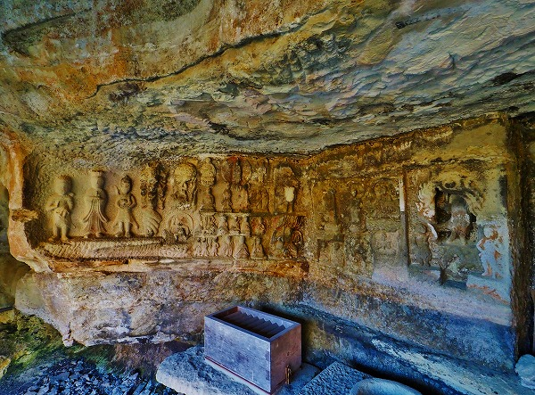
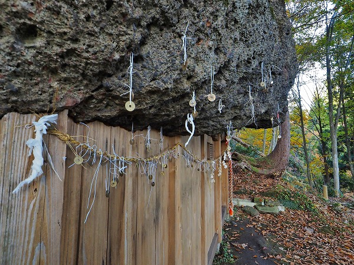

只見にやってきた。
只見とは福島県の最西端に位置する町だ。
会津と新潟を結ぶ
只見線が走り、田子倉湖や奥只見湖といった巨大ダム湖がある、
秘境という名がぴったりの場所だ。
そんな只見に不思議な神社があると聞いてやって来たのだが、いつものごとくまずは寄り道。
只見のお隣、金山町にある
鮭立の磨崖仏。

浅い岩陰に30体以上の仏が彫られている。
天明の飢饉の惨状を見て修験道が彫ったとされている。
かつては彩色されていたそうだが、今では風化が激しい。
不動明王、閻魔大王をはじめ荼枳尼天や飯縄権現などが彫られている。
四頭身のユニークな造形が特徴的な磨崖仏なので、只見にお越しの際は寄り道をお勧めします。
で、本日のお目当てである
三石神社に到着。
鮭立の磨崖仏以外にもあちこち寄り道してきたので到着は夕方になってしまった。
鳥居を潜って振り返ったところ。
ここは只見駅からも近く、振り向けば只見の集落が見える。
晩秋の夕方、山が燃えるように赤く染まっていた。
真っ赤な山道を歩いて行く。
しばらく歩くと森の中に大きな岩が現れる。
コレが
一の岩だ。
三石神社は3つの岩を信仰する神社で、そのうちの一つめだ。
岩の足元に穴が空いており、その奥に水が溜まっている。
この穴に頭を突っ込んでお祈りすると頭の病気が治ったり、頭が良くなったりするのだという。
頭の悪い私なので頑張って頭を突っ込んでみました。アタマが良くなりますように…
続いて現れたのが
涙岩。
昔から夏の暑い日でも涙を流すように水がしみ出ているという。
その水を目に浸すと眼病が平癒するという。
それらしき場所に小さな鳥居があったが、
水はしみ出てなかった。
頭よりも目の衰えの方が深刻な小生としてはこちらの方が期待大だったのだが、仕方あるまい。

鳥居の裏には賽銭があった。
一旦、一の岩に戻りさらに奥を目指す。
すると現れるのがこんな光景。
三番目の岩である。
縁結びの岩と呼ばれている。
巨大な岩の岩陰を塞ぐように社殿が設けられている。
社殿、と言っても岩自体が屋根になっているので、岩陰を正面と左右の壁で覆っているだけなのだが。
この神社で最も見たかったもの。
それはこの
巨岩にぶら下がっている五円玉だったのだ。
岩に開いた小さな孔に紙縒りや糸を通し、そこに五円玉を結び付けたもの。
岩が丁度庇のようになっている箇所にたくさんの五円玉が奉納されている。
無論これは縁結びに御利益があるという事だ。

元々は孔に通した紙縒りや糸を親指と小指で結ぶと縁が出来る、というものだったが、今では五円玉が主流になっている。
もちろん五円＝御縁という駄洒落である。
中を覗いてみる。
扉かと思ったら、引き違いに開閉するわけでもなく、いわば嵌め殺しのような状態になっていた。
つまり中に入る時はこの扉のような板ごと外して入る、ということになる。
つまり滅多に入ることがないのだろう。
内部は床があり、奥側にも壁があった。
このような形状の覆堂は奥がそのまま岩壁、というケースが多いのでやや珍しかった。
奥には小さな祠があった。
ちなみにこの神社の祭神は伊邪那美命、白山姫命、少那彦命である。
上を見ればやはり天井はなく、岩壁が迫っており
押しつぶされそうな空間だった。
軒先のように岩が貼りだしており、そこに無数の五円玉が奉納されている。
孔に通す、というが案外岩壁の出っ張りに引っ掛けてある紙縒りも多い。
他にも岩に手が届かないのか、適当な孔が見つからなかったのか、覆堂に渡してある綱に結び付けているものもあった。
こうしてみていると
天から降ってくる聖なる雨粒のように見えてくるのは気のせいだろうか？
少し大きめの孔があると集中的に紙縒りが通されている。
この辺の見てくれの事など気にしない、
なりふり構わないせめぎ合いが民間信仰の醍醐味だと思うのだが、如何でしょう？
のんびりしていたら日が暮れてしまった。
急いで戻ろう。
道中の真っ赤な葉が印象的だった。
ここも1か月もしない内に雪景色になるだろう。
只見町は日本屈指の豪雪地帯なのだ。